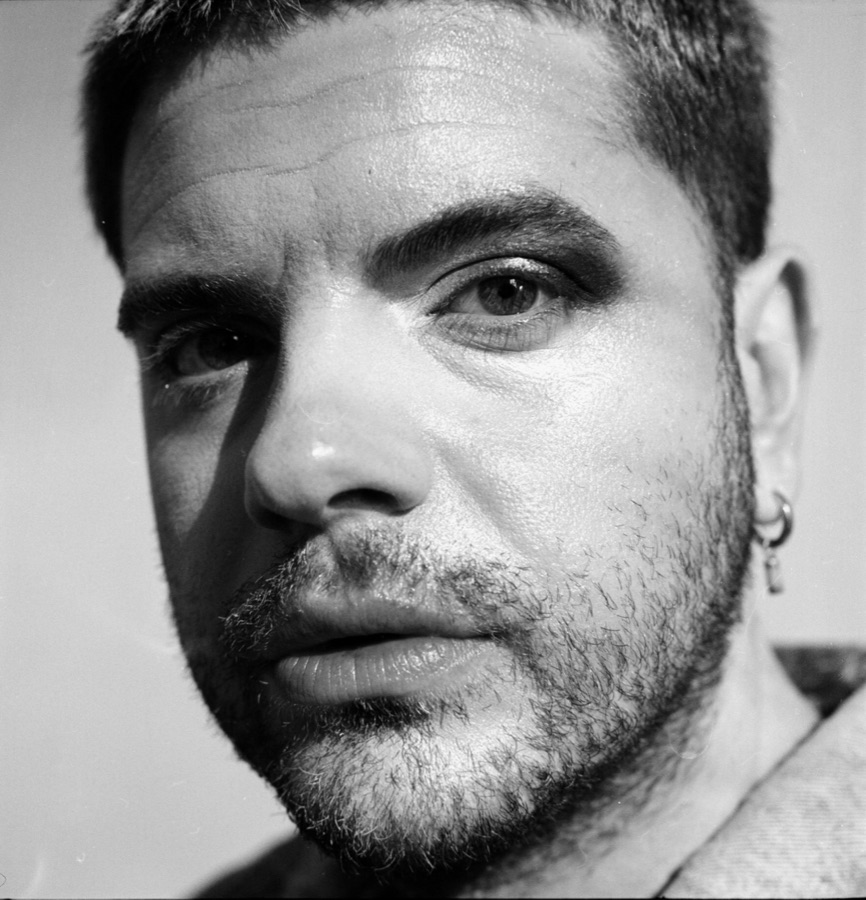

Rik Versteeg
Rik Versteeg is een queer visueel kunstenaar en professioneel fotograaf uit Rotterdam. Hij werkt in opdracht en aan eigen projecten, vaak met een focus op portret, identiteit en de gelaagdheid van beeld. Zijn werk beweegt zich tussen commerciële fotografie en autonoom artistiek werk, waarin persoonlijke verhalen en maatschappelijke thema’s regelmatig terugkomen.
De afgelopen jaren heeft hij zich steeds verder gespecialiseerd in analoge fotografie. Hij werkt met het volledige proces: van het fotograferen op film tot het ontwikkelen en het maken van handmatige afdrukken in de donkere kamer. Door deze combinatie van digitaal en analoog werk heeft hij een brede technische basis opgebouwd en veel praktische ervaring met verschillende fotografische workflows.
Die ervaring gebruikt hij om de donkere kamer te runnen als een toegankelijke, goed uitgeruste werkplek voor zowel beginnende als ervaren fotografen die zelf met analoge fotografie aan de slag willen.
rikversteeg.com ↗